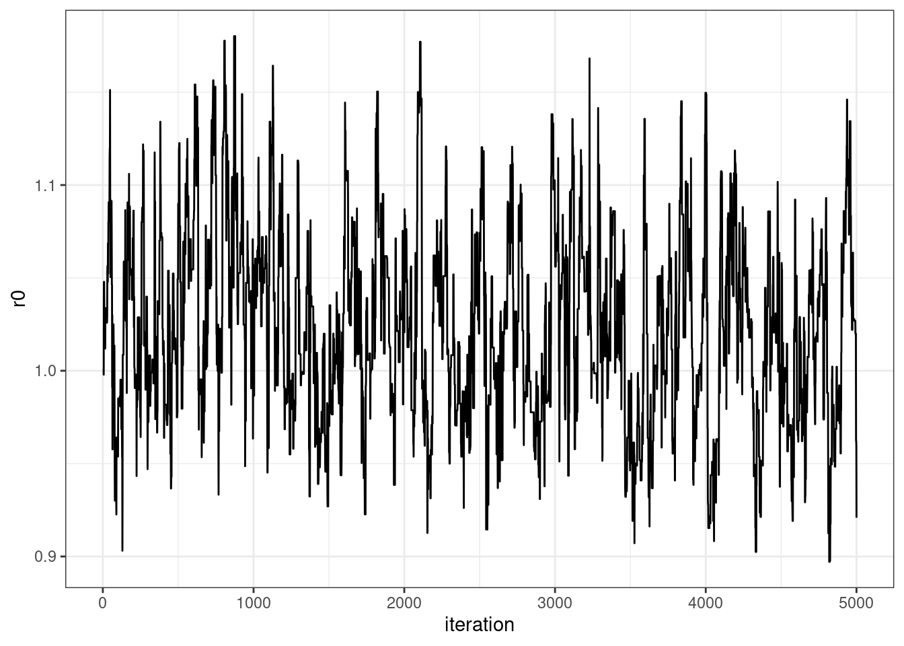

library(tidyverse)Parameter Estimation in Dynamical Systems
Toy example: logistic growth of a population.
\[ \frac{dN}{dt} = rN ( 1 - \frac{N}{K}) \]
where \(N(t)\) is the number of individuals at time \(t\), \(r\) is the per capita growth rate, and \(K\) is the carrying capacity.
This toy example can be solved analytically,
\[ N(t) = N_0 f(t) \]
Let true parameter values \(r = 1\), \(N_0 = 10\), \(K = 50\).
# https://en.wikipedia.org/wiki/Population_growth
growth = function(K, r, N0, t) {
A = (K - N0) / N0
round(K / (1 + (A * exp(-r * t))))
}
tVector = seq(0, 5, 0.05)
Y = growth(K = 50, r = 1, N0 = 10, t = tVector)
set.seed(360)
df = data.frame(t = tVector, Y) %>%
slice_sample(n = 15) %>%
arrange(t)
glimpse(df)Rows: 15
Columns: 2
$ t <dbl> 0.30, 0.65, 0.70, 1.00, 1.10, 2.15, 2.35, 2.50, 2.85, 3.30, 3.55, 4.…
$ Y <dbl> 13, 16, 17, 20, 21, 34, 36, 38, 41, 44, 45, 47, 48, 48, 48# start at some arbitrary starting point
r0 = 2
K = 100
N0 = 5
growth(K = K, r = r0, N0 = N0, t = df$t) [1] 9 16 18 28 32 80 85 89 94 97 98 100 100 100 100Model
Assumption: iid N(0, 1) noise.
Data generative model:
\[ Y(t)| N_0, r_0, K \sim Normal(N_0 f(t, N_0, K, r_0), 1) \]
Horrible priors:
\[ \begin{aligned} N_0 &\sim Unif(1,50)\\ K &\sim Unif(40, 1000)\\ r_0 &\sim Unif(0, 100) \end{aligned} \]
Inference
set.seed(360)
# starting points
K_s = 75 #runif(1, 40, 1000)
K = NULL
N0_s = 25 #runif(1, 1, 50)
N0 = NULL
r0_s = 10
r0 = NULL
S = 100000 # number of iterations
delta = 1 # proposal variance
accept = 0 # keep track of acceptance rate
getLogPosterior = function(K, r, N0) {
mu = growth(K = K, r = r, N0 = N0, t = df$t)
if (N0 < 0) {
return(-Inf)
}
if(K < 0) {
return(-Inf)
}
if(r < 0) {
return(-Inf)
}
else {
return(sum(dnorm(df$Y, mu, sd = rep(1, nrow(df)), log = TRUE)))
}
# todo: should add indicator whether or not within uniform ranges !
}
for (s in 1:S) {
# log everything for numerical stability #
## propose K
K_proposal = rnorm(1, mean = K_s, sd = delta)
log.r = getLogPosterior(K = K_proposal, r = r0_s, N0 = N0_s) -
getLogPosterior(K = K_s, r = r0_s, N0 = N0_s)
if(log(runif(1)) < log.r) {
K_s = K_proposal
accept = accept + 1
}
if(s %% 10 == 0) {
K = c(K, K_s)
}
# propose N0
N0_proposal = rnorm(1, N0_s, 1)
log.r = getLogPosterior(K = K_s, r = r0_s, N0 = N0_proposal) -
getLogPosterior(K = K_s, r = r0_s, N0 = N0_s)
if(log(runif(1)) < log.r) {
N0_s = N0_proposal
accept = accept + 1
}
if(s %% 10 == 0) {
N0 = c(N0, N0_s)
}
## propose r
r0_proposal = rnorm(1, r0_s, .5)
log.r = getLogPosterior(K = K_s, r = r0_proposal, N0 = N0_s) -
getLogPosterior(K = K_s, r = r0_s, N0 = N0_s)
if(log(runif(1)) < log.r) {
r0_s = r0_proposal
accept = accept + 1
}
if(s %% 10 == 0) {
r0 = c(r0, r0_s)
}
}
accept[1] 69129POST = data.frame(r0 = r0,
K = K,
N0 = N0)
numBurn = 0.5*nrow(POST)
POST = POST[-c(1:numBurn),]
POST %>%
ggplot(aes(x = 1:nrow(POST), y = r0)) +
geom_line() +
theme_bw() +
labs(x = "iteration")
SIR Model
\[ \begin{aligned} \frac{dS}{dt} &= -\beta SI\\ \frac{dI}{dt} &= \beta SI - \gamma I\\ \frac{dR}{dt} &= \gamma I \end{aligned} \]